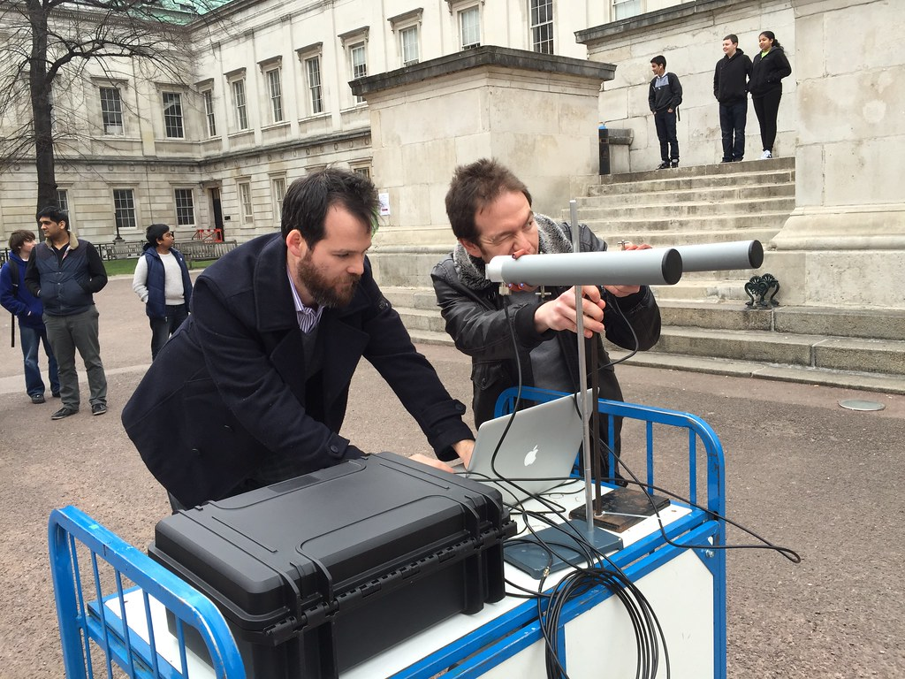

Security & Crime · 14 Nov 2026
ASUU bars officials from endorsing 2027 candidates, parties

The Academic Staff Union of Universities has barred its officials from using the union’s name or platform to endorse political candidates or parties ahead of the 2027 general elections. Read More: https://punchng.com/asuu-bars-officials-from-endorsing-2027-candidates-parties/
Multiple independent publishers are reporting on the same development: ASUU bars officials from endorsing 2027 candidates, parties.
The available reports place the development in the Security & Crime category. The accounts were compared for agreement on the central event rather than simply shared names or broad topics.
One of the available reports describes the development this way: The Academic Staff Union of Universities has barred its officials from using the union’s name or platform to endorse political candidates or parties ahead of the 2027 general elections. Read More: https://punchng.com/asuu-bars-officials-from-endorsing-2027-candidates-parties/
Readers should consult the linked source reports for additional context, updates and details that may change as the story develops.
Sources
This article was produced by the C. O. Eric AI Newsroom from the cited sources. It is published only after automated evidence and safety checks.